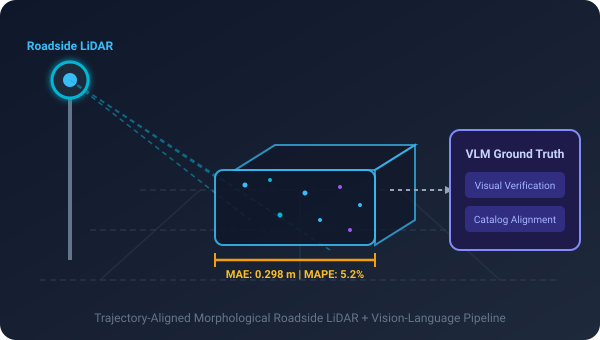
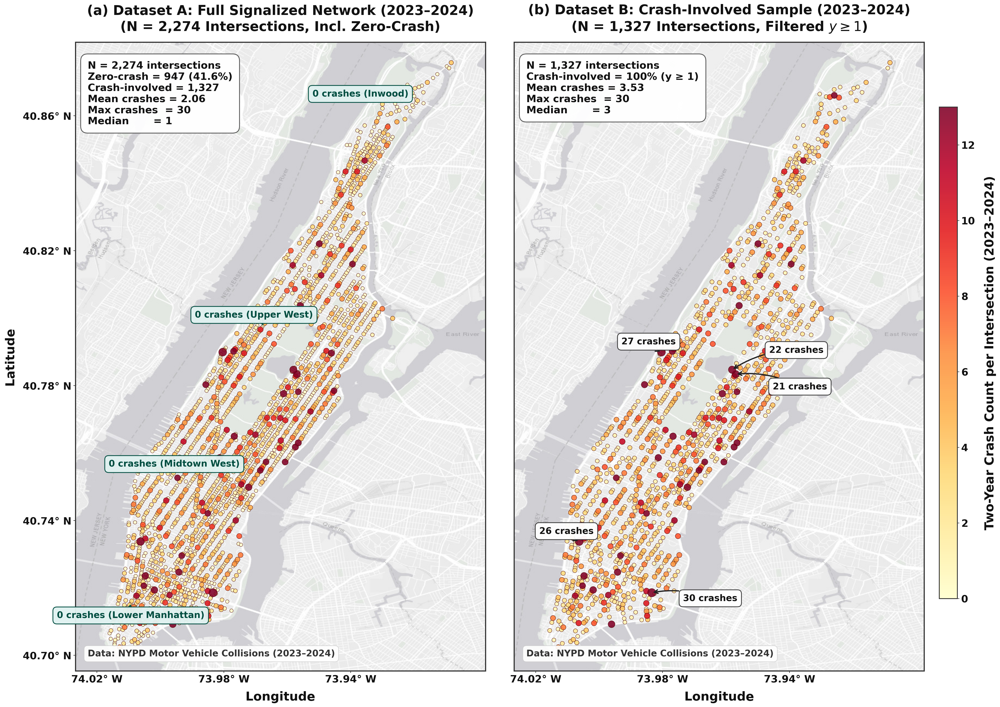

Bridging 3D LiDAR Perception, Vision-Language Models & Autonomous Vehicle Safety.
I am a Ph.D. Researcher and Fellow in Transportation Engineering at The City College of New York (CUNY), working under the supervision of Dr. Yiqiao Li in the AI & Mobility Research Lab. With a foundational background in Computer Science & Engineering, my research exists at the intersection of deep learning, spatial point clouds, and physical infrastructure safety.
My current work focuses on developing infrastructure-based 3D LiDAR perception frameworks, engineering automated ground-truth generation and data validation pipelines using Vision-Language Models (VLMs), and modeling Infrastructure–ADAS interactions to predict and mitigate complex urban crash risks.
7+
Papers & Posters
TRB '26
Accepted Paper
0.298m
LiDAR MAE (5.2%)
5-Yr
PhD Fellowship
3D LiDAR & VLMs
Point cloud processing, trajectory-aligned vehicle dimension extraction, and active learning validation powered by Vision-Language Models.
ADAS & Crash Risk
Multimodal deep learning fusing computer vision and road geometry to uncover non-linear conflict mechanisms at urban intersections.
Human Sensing & XR
Biometric tracking with wearable IoT sensors and video frame engagement analytics for assistive technologies and cognitive modeling.
Updates
Latest News & Milestones
Recent research breakthroughs, publications, talks, and milestones.
Aug 2026
🎉 Our research paper "Understanding Infrastructure–ADAS Interactions in Urban Crash Risk: A Multimodal AI Approach for Intersection Safety" has been officially accepted for presentation at the Transportation Research Board (TRB) 105th Annual Meeting (2026) in Washington, D.C.!
Spring 2026
🚀 Developed an Accurate Infrastructure-Based LiDAR Framework for bumper-to-bumper vehicle length estimation on highway traffic, integrating Vision-Language Models (VLMs) for automated ground-truth validation with 0.298m MAE (5.2% MAPE).
Jan 2026
👨🏫 Appointed as Adjunct Lecturer / Graduate Teaching Assistant at CCNY Civil Engineering, co-instructing undergraduate engineering problem solving (CE 10000) and assisting Transportation Systems Engineering (CE 32700).
Fall 2025
🏆 Awarded the competitive Grove School of Engineering Ph.D. Fellowship at The City College of New York (CUNY), providing a full tuition waiver and multi-year stipend. Joined the AI & Mobility Research Lab under Dr. Yiqiao Li.
Jun 2024
🎙️ Delivered an invited technical hands-on workshop on "Bridging Reality: Augmented Reality in Modern Robotics" at the IEEE ULAB Robotics and Automation Society SBC.
Research
Featured Research & Projects
Key investigations spanning 3D LiDAR perception, multimodal AI, ADAS safety, and assistive sensing.

Spring 2026
City College of New York (CUNY) · AI & Mobility Lab
Infrastructure-Based 3D LiDAR & VLM Ground-Truth Framework
Engineered an end-to-end Trajectory-Aligned Morphological Framework to robustly extract bumper-to-bumper vehicle lengths from roadside 3D LiDAR point clouds. Developed an automated benchmark pipeline leveraging modern Vision-Language Models (VLMs) to query and validate extracted dimensions against OEM manufacturer catalog specifications.
Key Result: Evaluated on complex highway traffic, achieving average MAE of 0.298 meters and 5.2% MAPE across multi-class vehicles.
3D LiDARPoint CloudsVLMsTrajectory ModelingPythonOpenCV

TRB 2026 Accepted
CUNY AI & Mobility Lab · Transportation Research Board
Understanding Infrastructure–ADAS Interactions in Urban Crash Risk
Formulated a comprehensive multimodal AI framework fusing computer vision, road geometry topology, and surrogate traffic safety measures to investigate how ADAS penetration interacts with complex urban infrastructure. Discovered critical non-linear crash risk predictors at signalized and unsignalized intersections across Manhattan.
Acceptance: Accepted for presentation at the 105th Transportation Research Board (TRB) Annual Meeting.
ARise: Multimodal Behavioral Tracking & Assistive AR
Investigated assistive technology efficacy for children with Autism Spectrum Disorder (ASD). Developed an Augmented Reality literacy application paired with IoT wearable wristband sensors (FitBit/vital tracking) and automated computer vision video frame analysis to capture biometric stimuli responses and learner engagement kinetics.
Impact: 3 submitted/published papers establishing quantitative engagement metrics from combined video frames and wearable physiological vitals.
Real-Time Edge AI for Traffic Lane Rule Violation Detection
Engineered an intelligent traffic monitoring device on a Raspberry Pi System-on-Chip (SoC) using YOLO computer vision to detect lane rule violations in real-time. Designed spatio-temporal vehicle tracking algorithms deployable directly onto roadside infrastructure cameras.
Performance: Achieved 78% detection accuracy operating in real time under diverse illumination and urban road conditions.
Peer-reviewed conference proceedings, journal papers, and research posters.
TRB 2026 · Accepted2026
Understanding Infrastructure–Advanced Driver-Assistance System Interactions in Urban Crash Risk: A Multimodal AI Approach for Intersection Safety
Faed Ahmed Arnob, Bo Shang, Yiqiao Li, Abolfazl Karimpour
Transportation Research Board (TRB) 105th Annual Meeting, Washington, D.C.
Abstract: Advanced Driver-Assistance Systems (ADAS) offer substantial safety potential, yet their efficacy is strongly moderated by physical urban roadway infrastructure and complex traffic interactions. This research introduces a multimodal artificial intelligence framework that couples computer vision surrogate safety metrics with high-resolution geometric and traffic signal data. We analyze cross-sectional crash risks across complex intersections, revealing non-linear sensitivity factors and establishing infrastructure-readiness guidelines for autonomous and semi-autonomous driving.
@inproceedings{arnob2026understanding,
title={Understanding Infrastructure--Advanced Driver-Assistance System Interactions in Urban Crash Risk: A Multimodal AI Approach for Intersection Safety},
author={Arnob, Faed Ahmed and Shang, Bo and Li, Yiqiao and Karimpour, Abolfazl},
booktitle={Transportation Research Board (TRB) 105th Annual Meeting},
year={2026},
address={Washington, D.C., USA}
}
Research Poster2026
An Accurate Infrastructure-Based LiDAR Framework for Precise Vehicle Length Estimation
Faed Ahmed Arnob, Bo Shang, Yiqiao Li
AI & Mobility Research Lab, City College of New York (CUNY)
Abstract: Accurate bumper-to-bumper vehicle dimension extraction is vital for automated classification and digital twin traffic management. We propose a Trajectory-Aligned Morphological Framework using roadside LiDAR point clouds that mitigates occlusion errors. To overcome lack of ground-truth data, we implement a Vision-Language Model (VLM) validation pipeline to benchmark measurements against vehicle specifications, achieving an MAE of 0.298 meters.
@misc{arnob2026accurate,
title={An Accurate Infrastructure-Based LiDAR Framework for Precise Vehicle Length Estimation},
author={Arnob, Faed Ahmed and Shang, Bo and Li, Yiqiao},
howpublished={Poster Presentation, City College of New York},
year={2026}
}
IEEE Published2020
An Intelligent Traffic System for Detecting Lane Based Rule Violation
F. A. Arnob, A. Fuad, A. T. Nizam, S. Barua, A. A. Choudhury, M. Islam
IEEE International Conference on Advances in Emerging Computing Technologies (ICAECT)
Abstract: Rapid motorization requires automated enforcement of lane discipline. We present an end-to-end edge computer vision device implemented on a Raspberry Pi using YOLO architectures for detecting lane-based rule violations in real-time with an overall 78% accuracy.
@inproceedings{arnob2020intelligent,
title={An Intelligent Traffic System for Detecting Lane Based Rule Violation},
author={Arnob, Faed Ahmed and Fuad, Azmol and Nizam, Abu Tahir and Barua, S and Choudhury, A A and Islam, Motaharul},
booktitle={2020 IEEE International Conference on Advances in Emerging Computing Technologies (ICAECT)},
year={2020},
organization={IEEE}
}
Published2020
A Novel Traffic System for Detecting Lane-Based Rule Violation
Md. Azmol Fuad, Faed Ahmed Arnob, Abu Tahir Nizam, Md. Motaharul Islam
International Conference on Advances in The Emerging Computing Technologies
Abstract: Real-time lane discipline violations cause hazardous congestion. This paper outlines an edge-based framework for continuous surveillance cameras using deep convolutional neural networks to identify illegal lane transitions.
Submitted2025
Engagement in ASD Children During ARise Learning Sessions: A Video Frame Analysis Approach
Abstract: Automated engagement quantification in neurodivergent populations is essential for therapeutic education. We introduce a computer vision video frame analytics pipeline to monitor gaze stability, attention focus, and interaction patterns during Augmented Reality educational interventions.
Submitted2025
ARise – an Augmented Reality app for Enhancing Literacy and Learning in Children with ASD
Academic research, industry development, teaching appointments, and degrees.
Research & Work Experience
Aug 2025 – Present
Graduate Research Assistant
AI & Mobility Research Lab · The City College of New York (CUNY)
Leading multimodal AI research investigating infrastructure-ADAS crash risks and intersection safety (accepted at TRB 2026).
Processing and analyzing roadside 3D LiDAR and camera sensor streams; designing deep learning models for 3D object detection, tracking, and spatial vehicle bounding.
Developed Vision-Language Model validation pipeline benchmarking point cloud measurements against OEM vehicle catalogs.
Jan 2026 – Present
Adjunct Lecturer / Graduate Teaching Assistant
Dept. of Civil Engineering · The City College of New York (CUNY)
Fall 2026: Co-instructing CE 10000 - Fundamentals of CE Problem Solving (in-person undergraduate course).
Spring 2026: Assisting Dr. Yiqiao Li for CE 32700 - Transportation Systems Engineering (traffic engineering, multimodal LOS, traffic signal operations).
Led feasibility and engineering for Augmented Reality interventions for children with ASD.
Engineered AR mobile app and paired wearable sensor systems to log and quantify physiological stimuli and learner engagement.
Jun 2022 – Feb 2023
Research Trainee (AR, VR, XR & Deep Learning)
Indian Institute of Technology (IIT Guwahati & IIT Kharagpur)
Competitive 6-month specialized fellowship program funded by Government of India and BHTPA.
Trained on deep learning, computer vision, spatial computing, and NLP word embedding models (Bangla GloVe).
Jan 2022 – May 2022
Lecturer (Contractual)
Dept. of Computer Science & Engineering · BRAC University
Taught Programming Language I (Structured Programming in C, Python, Java).
Education
Fall 2025 – Present
Ph.D. in Civil Engineering (Transportation AI)
The City College of New York (CUNY) · Grove School of Engineering
CGPA: 3.76 / 4.00 Advisor: Dr. Yiqiao Li — AI & Mobility Research Lab. Focus: 3D LiDAR point cloud processing, Vision-Language Models, multimodal crash risk prediction, spatial computing. Honors: Awarded 5-Year Competitive Ph.D. Fellowship (full tuition waiver + stipend).
2024
M.S. in Computer Science & Engineering (Coursework)
United International University
CGPA: 4.00 / 4.00 (Data Science Track)
Completed advanced coursework in machine learning, statistics, and neural networks; transitioned to fully funded Ph.D. program in the USA.
2017 – 2021
B.S. in Computer Science and Engineering
BRAC University
CGPA: 3.73 / 4.00 Undergraduate Thesis: An Efficient Traffic Management System to Detect Lane Based Rule Violation using Real-Time Object Detection. Honors: 6 Semesters on Vice Chancellor's List (GPA 3.90–4.00), 2 Semesters on Dean's List, 70% Merit Scholarship.
Instruction
Teaching & Community Leadership
Classroom instruction, invited seminars, professional affiliations, and mentorship.
University Courses Taught
City College of New York (CUNY) & BRAC University
CE 10000: Fundamentals of Civil Engineering Problem Solving (CCNY, Fall 2026)
CE 32700: Transportation Systems Engineering (CCNY, Spring 2026, with Dr. Yiqiao Li)
CSE 110 / 111: Programming Language I & II (Structured Programming & OOP, BRACU)
Invited Seminars & Talks
Workshops & Technical Presentations
"Bridging Reality: Augmented Reality in Modern Robotics" — IEEE ULAB Robotics & Automation Society SBC (Jun 2024)
"Seminar on Augmented Reality Applications in Healthcare & Assistive Tech" — ULAB (Aug 2023)
Conference Presenter — International Conference on Advances in Emerging Computing (ICAECT, KSA)
Service & Leadership
Professional Societies & Communities
ASCE Member: American Society of Civil Engineers (TDI & Metropolitan Section)
ACM SIGCHI Member: Special Interest Group on Computer-Human Interaction
Research Mentor: BRAC University Leadership Development Forum
Community Leader: BDCyclist (largest cycling & sustainable mobility community in Bangladesh)
Technical Toolkit
Skills & Expertise
Proficiencies in deep learning, 3D LiDAR processing, programming, and simulation tools.
3D Point CloudsRoadside LiDARTrajectory ExtractionMorphological FilteringSensor Fusion (LiDAR + Camera)Digital TwinsGIS & Spatial NetworksUnity 3D / AR / XR